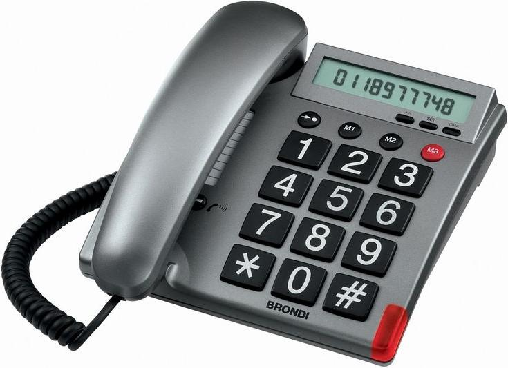

Teléfono Gratis » Teléfono Gratis
Teléfono Gratis
Menu Inicio¿Quién me llama al móvil?
septiembre 24, 2019 | Johana Martínez | OtrosDefinitivamente crece la duda y nuestra tranquilidad se perturba cuando encontramos varias llamadas perdidas en nuestro móvil de un número desconocido o durante esa reunión importante tu teléfono comienza a sonar y no es más que una llamada de telemarketing con anuncios molestos , en realidad, a todos nos ha pasado y en el peor de los casos el acoso y fraude telefónico se apoderan de nuestra paz; es en ese momento cuando no sabes de donde procede el número sospechoso es que se inicia en tu cabeza un gran lío de pensamientos y emociones que van desde pensar que algo grave pasó en casa o en la escuela de los chicos, que perdiste la oportunidad de contestar la llamada de ese empleo tan anhelado o que podría ser de la compañía de cobro ¿Cómo saber quién me llama? ¿De quién es este número que marca con tanta insistencia? ¿Devuelvo la llamada? ¡CALMA! Estamos para ayudarte, quédate en nuestro post porque tenemos la solución a tu problema, continúa leyéndonos.
Ver teléfono gratuitoTeléfono Gratuito Tyco
abril 13, 2018 | adriana | SeguridadTyco es una empresa dedicada a la seguridad y protección contra incendios. Actualmente pertenece al Grupo de Johnson Controls, ayudan a proteger a más de tres millones de clientes industriales, comerciales y residenciales en todo el mundo. La empresa cuenta con empleados profesionales y calificados. Entre los que se encuentran científicos, ingenieros, profesionales de ventas, técnicos y líderes de empresa.
Ver teléfono gratuitoTeléfono Gratuito 100 Montaditos
abril 12, 2018 | adriana | RestauraciónLa Cervecería 100 Montaditos es una cadena de restaurantes internacional española y pertenece al grupo Restalia. Este restaurante se especializa en la venta de 100 tipos diferentes de montaditos y su principal atractivo es que son súper económicos, sus precios son muy bajos. Actualmente cuentan con unas 350 franquicias en España y más de cien en los siguientes países: Estados Unidos, México, Colombia, Italia, Chile, Guatemala, Costa Rica, República Dominicana y Portugal. 100 Montaditos se fundó en el año 2000 en una playa de Islantilla, Huelva, con un concepto gastronómico sencillo y fácil, con ingredientes de alta calidad y gran variedad de producto.
Ver teléfono gratuito
Teléfono Gratuito Loomis
abril 12, 2018 | adriana | SeguridadLoomis es una empresa encargada del transporte, gestión y protección de artículos de valor. Loomies inició sus operaciones en España durante los años setenta y cuentan con treinta dos sucursales para ofrecer este tipo de servicio en todo el país. Dentro de la empresa trabaja un equipo de profesionales capacitados y de alto rendimiento para ofrecer a sus clientes un servicio eficaz y de excelente calidad utilizando lo último en tecnología para garantizar la seguridad de su trabajo.
Ver teléfono gratuitoTeléfono Gratuito Restaurante Arzak
abril 12, 2018 | adriana | AlimentaciónEl restaurante Arzak está en una casa que fue construida por los abuelos del chef en 1897, para ser bodega de vinos y taberna. Luego los padres de Juan Mari Arzak, convirtieron el lugar en una casa de comidas, el cual fue ganando fama como espacio de banquetes de celebraciones familiares. En 1967, un año después de que Juan Mari Arzak entrara en las cocinas del restaurante familiar, empezó a trabajar allí Maite Espina, mejorando el servicio de sala. En el año 1989 le otorgan la tercera estrella Michelin a dicho restaurante.
Ver teléfono gratuitoTeléfono Gratuito Institut Pere Mata de Reus
abril 12, 2018 | adriana | Hospitales , SaludEl Institut Pere Mata de Reus es un centro de salud mental el cual se encuentra ubicado en Tarragona, España. Este hospital atiende a personas de cualquier edad. El Instituto tiene los siguientes servicios: hospitalización, ambulatorios, emergencias. Como todo centro de salud deben avanzar en el área de investigación de diferentes enfermedades. En este instituto los doctores se encargan de la investigación para especializarse en el área de psiquiatría y ayudar a mejorar la calidad de vida de los pacientes. También trabaja en la formación docente para ayudar a los futuros profesionales en esta área de salud.
Ver teléfono gratuito
Teléfono Gratuito Mercado Libre
abril 11, 2018 | adriana | Comercio ElectrónicoMercado Libre es una empresa argentina que se encarga de la compra y venta de productos vía Internet. Mercado Libre tiene presencia en varios países de Latinoamérica, tales como: Bolivia, Brasil, Chile, Colombia, Costa Rica, Ecuador, Guatemala, México, Nicaragua, Panamá, Perú, Paraguay, Portugal, Salvador, República Dominicana, Uruguay, Honduras y Venezuela. Los usuarios pueden vender productos nuevos y usados. Mercado Libre también posee Mercado Pago, una plataforma de cobro a los vendedores. Su sede principal se encuentra en Buenos Aires, Argentina.
Ver teléfono gratuitoTeléfono Gratuito Estafeta
abril 11, 2018 | adriana | MensajeríaEstafeta tiene más de treinta y cinco años dedicando sus servicios con la más desarrollada tecnología, la garantía, experiencia y solidez que tienen en el sector de mensajería, paquetería y logística. Su equipo está altamente capacitado para que la atención brindada sea personalizada y de calidad. La tecnología que ellos utilizan les permite cubrir miles de destinos nacionales e internacionales. Cuentan con una extensa red de transporte propia que los ayuda para que los envíos lleguen a tiempo en su lugar de destino.
Ver teléfono gratuitoTeléfono Gratuito Interjet
abril 11, 2018 | adriana | AerolíneasInterjet es una aerolínea mexicana y tiene su sede principal en Lomas de Chapultepec, Ciudad de México. Interjet comenzó sus vuelos en el año 2005. Esta aerolínea fue fundada por Miguel Alemán Magnani. Interjet es una línea de bajo costo. Ellos le ofrecen a sus pasajeros servicios relacionados con las aerolíneas tradicionales como: más espacio entre asientos, snacks y bebidas sin costo, entre otros servicios que le brindan comodidad y seguridad al pasajero. Interjet viaja a 55 destinos en toda Latinoamérica. Ellos cuentan con 35 rutas de vuelo en México y 20 destinos internacionales en Estados Unidos, Canadá, Cuba, Centroamérica, Colombia y Perú.
Ver teléfono gratuitoTeléfono Gratuito Netshoes
abril 10, 2018 | adriana | Tiendas onlineNetshoes es la mayor tienda online de artículos deportivos. El objetivo principal de esta tienda virtual es la de inspirar y transformar sin límites la vida de las personas que practican deportes. Esta tienda fue fundada en Sao Paulo Brasil en el año 2000. Actualmente, esta marca opera en Brasil, Argentina y México.
Ver teléfono gratuito